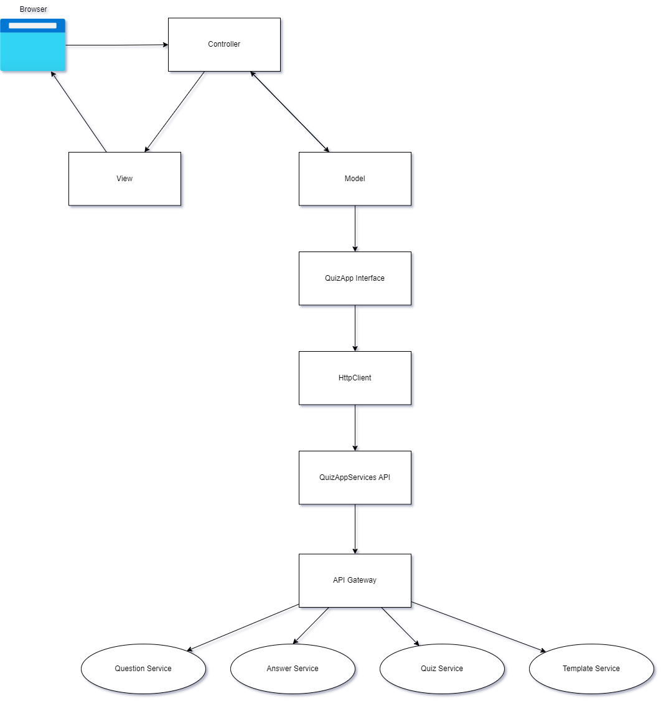
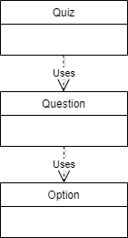
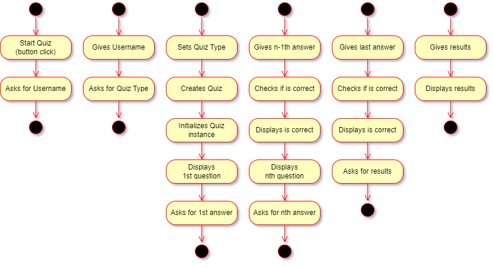
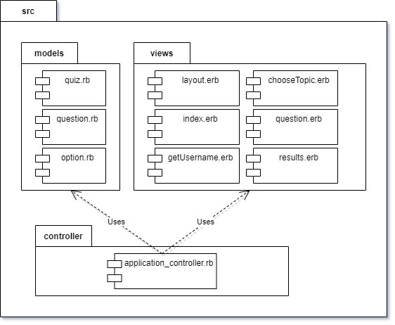
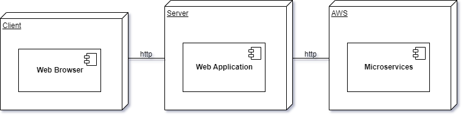
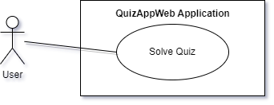

Application Design and Architecture¶ ↑
November 28, 2022
This documentation was developed as part of the project for the Software Design and Architecture course (Tc3049), at the Tecnológico de Monterrey, Campus Estado de México.
Authors¶ ↑
-
A01375577 Carlos Martínez Rodríguez
-
A01374561 José Francisco Murillo Lozano
Installing and Running the Application¶ ↑
Use this section to explain any details on how to install and run you application.
You need to have Ruby 2.7 or better, as well as the Sinatra, Shotgun, Faraday and Rack gems in your system to run the QuizAppWeb web application.
To install the required gems you can use the following command at the terminal from the QuizAppWeb directory:
$ bundle install
To run the server type any of the following commands at the terminal from the QuizAppWeb directory:
$ shotgun $ rackup config.ru $ ruby src/controller/application_controller.rb -s puma
Afterwards, point your web browser the server’s root URL.
Simple graphical representation of the QuizAppWeb application¶ ↑

4+1 Architectural View Model¶ ↑
Logical View¶ ↑
The following figure represents the UML class diagram for the models and controller:

Process View¶ ↑

Development View¶ ↑
The development view focuses on software modules and subsystems. In UML, package diagrams are used to model the development view.

Physical View¶ ↑
The physical view describes the physical deployment of the system, revealing which pieces of software run on what pieces of hardware. In UML, deployment diagrams are used to model the physical view.

Scenarios¶ ↑
This view describes the functionality of the system from the perspective from outside world. It contains diagrams describing what the system is supposed to do from a black box perspective. UML use case diagrams are used for this view.

Design Patterns Used¶ ↑
-
Domain-Specific Language: The
application_controller.rbfile consists of a series of Sinatra routes. Sinatra is a DSL for creating web applications in Ruby. -
Model-View-Controller: The application follows the classical web implementation of the MVC architectural pattern. The models (
.rbfiles) and views (.erbfiles) are stored in the correspondingsrc/modelsandsrc/viewsdirectory. The controller is contained inapplication_controller.rbfile under thesrc/controller. -
Singleton: The
Quizclass implements a singleton pattern (by session). -
Simple Factory: The microservices implement uses this Design Pattern.
References¶ ↑
-
M. Fowler. UML Distilled: A Brief Guide to the Standard Object Modeling Language, 3rd Edition. Addison-Wesley, 2003.
-
E. Gamma, R. Helm, R. Johnson, J. M. Vlissides. Design Patterns: Elements of Reusable Object-Oriented Software. Addison-Wesley, 1994.
-
A. Harris, K. Haase. Sinatra: Up and Running. O’Reilly, 2011.
-
Ph. Kruchten. The 4+1 View Model of Architecture. IEEE Software, vol. 12 (6), pp. 45-50, 1995. http://www.ics.uci.edu/~andre/ics223w2006/kruchten3.pdf Accessed November 28, 2022.
-
R. Olsen. Design Patterns in Ruby. Addison-Wesley, 2007.
-
Ruby-Doc.org. RDoc Markup Reference. http://ruby-doc.org/stdlib-3.0.0/libdoc/rdoc/rdoc/RDoc/Markup.html Accessed November 28, 2022.